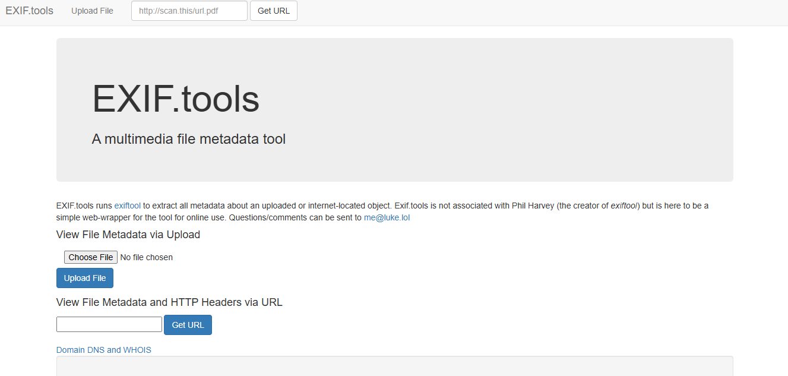
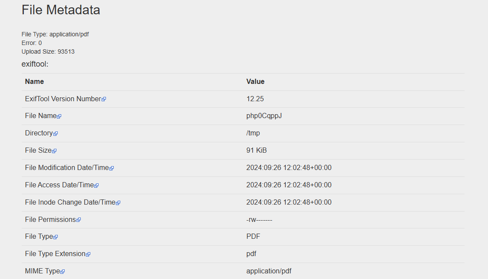

Xploit
HomeIn this challenge, you are tasked with analyzing the metadata of a suspicious PDF document to uncover a hidden flag. This exercise will test your ability to inspect files and detect information hidden within the metadata.
When you open the Exif.tools page you will be greeted with this console where you can simply upload the file whoes meta data you would like to check.
After you click "Upload File" you will be redirected to a page which will show you the complete details and meta data of your file.
This challenge tests your skills in extracting and analyzing metadata from files, a critical ability when investigating digital documents. By looking deeper into the structure of files, you can uncover hidden secrets and data that aren't immediately visible.
© 2024 Xpl0it. All rights reserved.
Empowering cybersecurity through CTF-based learning.